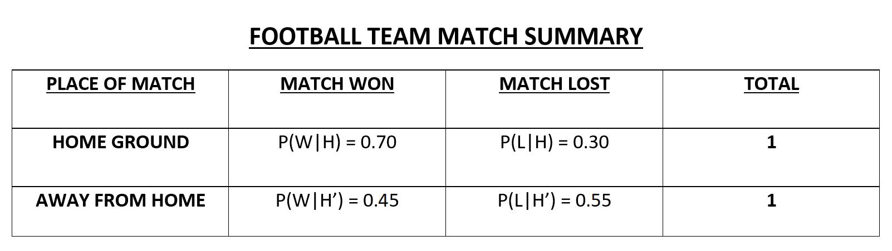
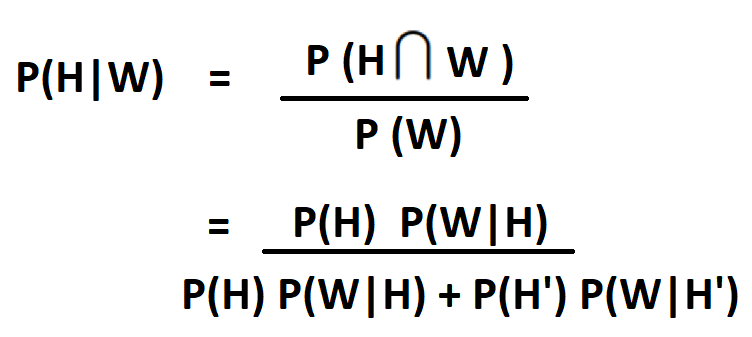
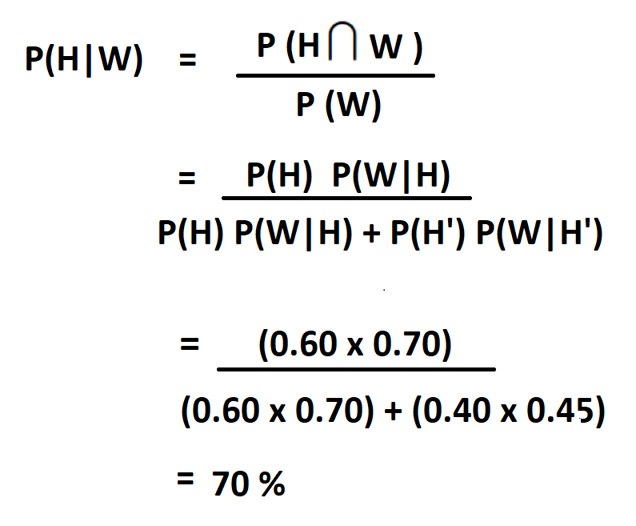
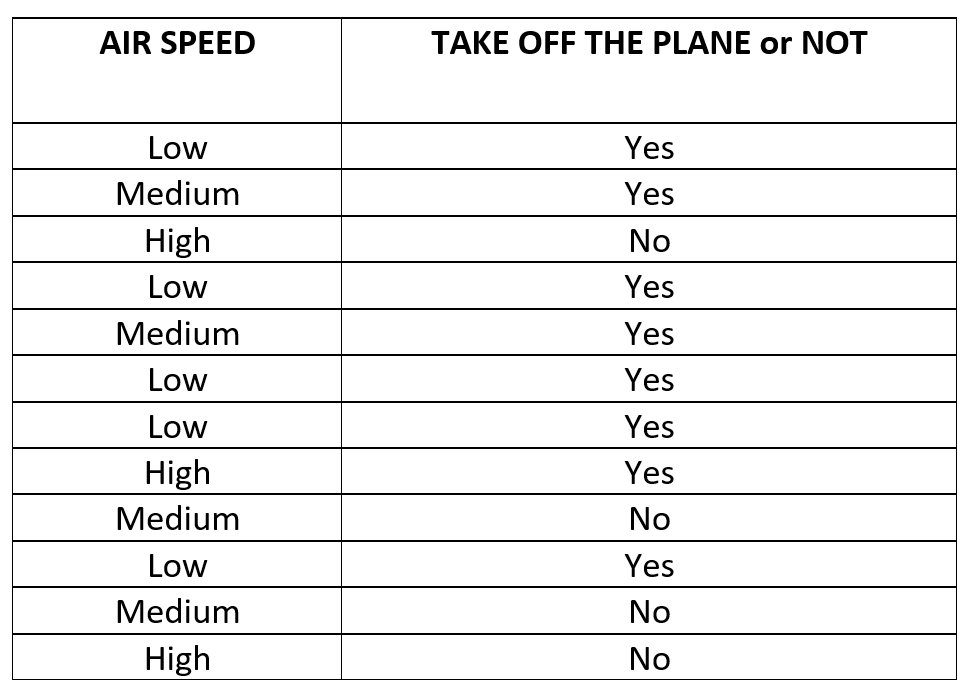
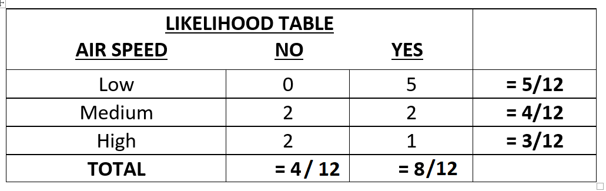

Hello Everyone !!
Thanks for continuing with this post.
In the last post, we discussed about the use of Logistic Regression both in theory as well as in code.
In this post, we will discuss another very basic Classification Algorithm in Machine Learning called as Naive Bayes. So, let's get started.
You can find the Python code file and the IPython notebook for this tutorial here.
But before moving to Naive Bayes Classifier, we firstly need to understand the driving force behind this classifier, the Baye's Rule.
Bayes Rule:
Baye's Rule or Baye's Theorem is a very simple rule that describes the probability of an event based on the prior conditions for that event.
Let's take a look at the formal definition of this. Wikipedia Defines Bayes Rule as follows:
In probability theory and statistics, Bayes’ theorem (alternatively Bayes’ law or Bayes' rule) describes the probability of an event, based on prior knowledge of conditions that might be related to the event. For example, if cancer is related to age, then, using Bayes’ theorem, a person’s age can be used to more accurately assess the probability that they have cancer, compared to the assessment of the probability of cancer made without knowledge of the person's age.
So, how can we define this as a mathematical expression ?? Well that's easy. Its the same equation we have been studying in high school mathematics class on probability. It is defined as:

Let's see this part by part and later on understand this using an example. So, the term we need to predict here is:
P(H|E) i.e. Probability of Hypothesis "H" given an event "E"
or in other words, Posterior Probability of "H" given evidence "E"
P(H) i.e. Probability of Hypothesis "H" irrespective of any other event
or in other words, the Prior Probability.
P(E|H) i.e. Probability that event "E" will happen given the Hypothesis "H".
or the Likelihood that event "E" will happen given the Hypothesis "H" is True.
P(E) i.e. Probability that the event "E" will happen
or in other words, Prior Probability that the event "E" is True.
Where the terms P(H|E) and P(E|H) are called the Conditional Probabilities and the terms P(H) and P(E) are called as the Class Probability.
Now that we know the equation for the Baye's Rule, let's understand its working with the help of an example.
Baye's Rule Example:
Like a lot of other people, I am also a football fan and I follow some teams occasionally. So, let's form a question around football and try to solve it using Baye's Rule. So, let's get started.
Well I like Barcelona, so I'll take that as an example. You can take whichever team you like. Now we have seen most of the times that the teams perform better on homegrounds as compared to somplace else as they have been practicing there for long. So, let's imagine that due to some issue, you were unable to see the match and now you want to find a probability that whether your favourate team won the match at home or away from home if they won the match using the previous matches won data. So, how can you do that?? Let's see.
So, I am making up some data for a football team. Feel free to play around with the data. So, let's see what it is:

In the above data I am assuming that a team wins a match, while playing on the home ground, 70% of the time and loses a match 30% of the time. Also, for matches away from home, say, the team wins the match 65% of the time and loses the match 35% of the time. So, we can write this data as follows:
P(W|H) = 0.70
i.e. Probability of winning a match when playing at Home.
P(W'|H) = 1 - P(W|H) = 1 - 0.70 => 0.30
i.e. Probability of losing a match when playing at Home.
P(W|H') = 0.45
i.e. Probability of winning a match when playing away from Home.
P(W'|H') = 1 - P(W|H') = 1- 0.45 => 0.55
i.e. Probability of losing a match when playing away from Home.
Also, I would like to add two more values to this table of values.
P(H) = 0.60 i.e. Probability of playing a match at Home Ground.
P(H') = 1 - P(H) = 1- 0.60 => 0.40
i.e. Probability of playing a match away from Home.
Now, you would say that,"We have defined all these values but we don't know where to put these vales. We don't have any formula that takes all these values." Well, we have defined the formula but not expanded it to such extent where we can see all these variables. So, let's expand our Baye's Rule formula.
Baye's Rule can also be written as:

So, now that we have the formula, let's plug in the values and find out the probability that your favourate team won the mactch at home ground.

From the above calculations we can clearly see that if the team won the match, then it has a probability of 0.7 or 70% chances that they played at their Home Ground. And what is the probability for the other case ?? Well, its given as:
1 - P(H|W) = 1 - 0.70 => 0.30
or 30 % chances that they didn't play at the Home Ground.
Well, this was all about the Baye's Rule and how it works. Now lets move to our main topic of this post i.e. Naive Baye's Classifier and see how Baye's Rule helps us in this Algorithm.
Naive Baye's Classifier:
The Naive Baye's Algorithm is a very simple and a intutive algorithm that uses the probabilities of each attribute belonging to each class in the dataset to make a prediction. "But why is it called Naive??", you may ask.
Well, it's called Naive because it makes a strong assumption that all the features in the dataset are independent of each other whereas we know from our earlier algorithms that the data features are correlated with each other most of the time. So, this assumption is very Naive and hence, the name Naive Baye's.
In the above discussion, we have discussed the concepts of Conditional and Class Probability. So, what has it to do with Naive Baye's?? Well, by multiplying the conditional probabilities together for each attribute for a given class value in dataset, we have a probability of a data instance belonging to that class.
To make a prediction for the test data, we can calculate probabilities of the instance belonging to each class from the dataset and select the class value with the highest probability as our final resulting class.
So, thats all about the theoretical part. But how does it actually work ?? Let's see that with the help of an example.
Here, we will take an example of Plane Takeoff. The aim is to find the probability that the Plane will take off or not given the Wind Speed. We know that during severe weather conditions or very high winds, the planes usually are not allowed to take off. So, let's define our toy dataset.

As you can see that we have three wind speeds i.e. High, Medium and Low and corresponding to that the label that whether the plane will take off or not. Since, the labels are only Yes or a No, it's a binary classification problem. So, let's now find out the Likelihood for each case by calculating the events frequency.

As the above table shows, we now have the frequency for each case and the likelihood that whether the label is a "Yes" or a "No" based on the input "Wind Speed". So, what's next?? Let's make some predictions and calculate the probabilities for our test cases.
Let's find: P(Yes|High) i.e. Probability of Plane to takeoff given the Wind Speed is High.
P(Yes|High) = (P(Yes) P(High|Yes)) / (P(High))
Taking the values from the Likelihood Table and putting them in the equation above, we get:
= ((8/12) * (1/8)) / (3/12)
which gives us:
P(Yes|High) = 1/3 => 0.33
The above probability shows that there are 33% chances that the plane will take off when the Wind Speed is very High which is True. Taking off a plane during high winds can be risky. Hence, our classification is true.
On thing you may have noticed here is that a plane's takeoff can be stopped due to many other reasons apart from High Wind Speed. But the Naive Baye's classifier does not count those things in the calculations which is the reason why we call it "Naive" in the first place.
So, now you might ask that we know all this now but is it good to use this classifier?? Is it worth our time to learn this algorithm and in what cases is it better or worst than other more optimized algorithms.
Well, here's the answer to your question. Say you have a vey large dataset and you need to see that whether that dataset is worth spending your time or not, there you can use Naive Baye's algorithm as it is fast and efficient and can provide an initial raw estimate of the class to which the test data belongs.
Moreover, as we know the property of Naive Baye's that it assumes that all features are independent of each other. So, in cases where you have a dataset with such a property, then Naive Baye's can perform better as compared to other algorithms.
So, where or when should we not use this algorithm ?? Well, Naive Baye's is looked upon as a bad estimator of probability. Hence, you might want to use some other classifier to verify the prediction made by Naive Baye's classifier.
Also, if the test data has a label or category which was not shown to the classifier during training, then it will not recognize it and instead assign a "0" to it due to its Naive assumption.
Now that we have covered the basics of Naive Bayes Algorithm, I think its now time to put this knowledge in code and see how this algorithm works. For doing this, we wll be writing the code for Email Spam Classification and see how this calssifier performs.
Great work on completing this tutorial, let's move to the next tutorial in series, Introduction to Machine Learning: Programming a Naive Bayes Classifier from Scratch
For more projects and code, follow me on Github
Please feel free to leave any comments, suggestions, corrections if any, below.
comments powered by Disqus